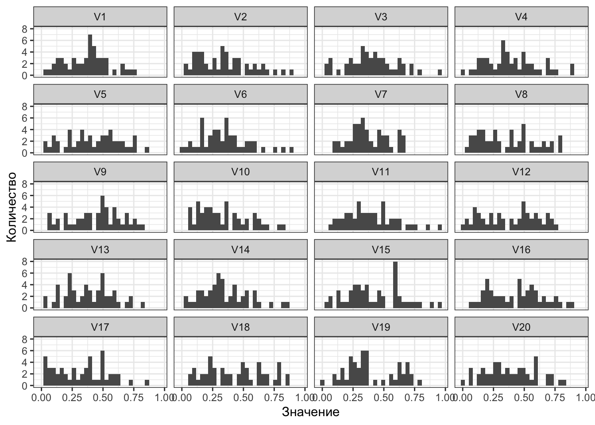

6 Доверительные интервалы
6.1 Точечные и интервальные оценки
До этого момента мы работали только с точечными оценками — это оценки, представляющие собой одно число. Например, таковы меры центральной тенденции — медиана, среднее арифметическое — или меры разброса — межквартильный размах, дисперсия, стандартное отклонение. Когда мы рассчитываем каждый из этих показателей мы получаем только одно число.
Однако поскольку мы имеет дело со статистическими данными, основные свойства которых это неопределенность и вариативность, нам необходимы, помимо точечных оценок, ещё и интервальные оценки.
Напомним кратко себе, что
- Неопределенность статистических данных означает, что мы никогда не знаем, что мы получим в результате данного конкретного измерения.
- во-первых, потому что мы работаем со случайными величинами,
- во-вторых, потому что наши измерительные инструменты не идеальны и всегда содержат ошибку измерения.
- Вариативность статистических данных говорит нам о том, что наши измерения всегда обладают некоторым разбросом.
- во-первых, потому что объекты нашего изучения — люди — разные,
- во-вторых, потому наши измерительные инструменты всё ещё не идеальны и всегда содержат ошибку измерения.
Таким образом, мы не можем быть до конца уверены, что мы получили суперточную оценку изучаемых нами параметров. Даже если мы пользуемся достаточно точными измерительными инструментами, собираем большие выборки и вообще делаем всё, чтобы быть максимально точными и объективными. Возникает необходимость найти какие-то способы выражения нашей неуверенности в точечной оценки параметра генеральной совокупности. Это и есть интервальные оценки — по сути, меры нашей неуверенности.
Чтобы к ним подойти, нам придется познакомиться с одной важной статистической теоремой.
6.2 Центральная предельная теорема
Пожалуй, сразу бахнем формулировку, а потом будем разбираться, что она означает.
Теорема 6.1 Cумма достаточно большого количества слабо зависимых случайных величин, имеющих примерно одинаковые масштабы (ни одно из слагаемых не доминирует, не вносит в сумму определяющего вклада), имеет распределение, близкое к нормальному.


Итак, пусть есть некоторый параметр в генеральной совокупности, который асимметрично распределён. Возьмем случай именно асимметричого распределения, чтобы более наглядно увидеть эффект. Допустим, выглядит это как-то так:
Вот такая красивая штука у нас есть в генеральной совокупности. На всякий случай отмечу, то это некоторое теоретическое распределение — вообще-то мы не знаем наверняка, что там в генеральной совокупности творится. Но вот будем думать, что там что-то такое.
Понятно, что наш параметр, наш параметр, наша случайная величина имеет некоторое среднее и некоторый разброс в генеральной совокупности:
Value mean 0.4 sd 0.2 Ну, вот какие-то такие.
Чтобы максимально точно приблизиться к оценке нашего параметра — будем оценивать среднее генеральной совокупности — нам надо извлечь много больших выборок из нашей генеральной совокупности. Ну, допустим мы извлекаем 1000 выборок по 50 наблюдений. Можно и больше, но давайте посмотрим пока, что будет на таких значениях.
Посмотрим на распределения нашей переменной в нескольких из выборок:
Вот распределения в первых шестнадцати выборках. На что здесь стоит обратить внимание?
От выборки к выборки распределения отличаются. Причем достаточно сильно — где-то распределение больше похоже на нормальное, где-то оно более асимметричное, где-то менее, где-то вообще напоминает равномерное. Это мы в живую увидели вариативность и неопределенность. Каждая из выборок характеризуется каким-то своим средним и каким-то своим разбросом. Вот таблица: Sample Mean SD 1 0.4202292 0.2044323 2 0.3892443 0.2037850 3 0.3861993 0.2224778 4 0.3774064 0.1952898 5 0.4172960 0.2081190 6 0.3616459 0.2052460 7 0.4703232 0.2111924 8 0.4075789 0.2011449 9 0.4141822 0.2018535 10 0.4245290 0.2087136 11 0.3893637 0.1911761 12 0.3778744 0.1983516 13 0.4130055 0.2144898 14 0.3661605 0.1807597 15 0.3956731 0.1963239 16 0.3860937 0.2003544
Видим, что есть некоторая вариативность выборочных средних. Но раз у нас есть 1000 выборок — а значит и 1000 средних — мы можем построить распределение выборочных средних.
Мы получили распределение выборочных средних значений, которое хотя и не очень похоже на нормальное в данном конкретном случае, но как минимум стало почти симметричным! Вот об этом и говорит центральная предельная теорема.
Более того, если мы посчитаем среднее и стандартное отклонение данного распределения, мы получим следующее:
Value mean 0.3995205 sd 0.0285545 Обратите внимание, на сколько точную оценку генерального среднего мы получили! Да еще и такой ничтожный разброс! Ну, красота!
Также нужно обратить внимание еще на две важные детали:
чем большее количество выборок мы наберем, тем ближе распределение будет к нормальном и тем более точную оценку среднего мы получим чем большее количество наблюдений будет в отдельной выборке, тем ближе распределение будет к нормальном и тем более точную оценку среднего мы получим Увидеть, как это работает, можно здесь.
Итак, независимо от того, какое распределение переменной есть в генеральной совокупности, при извлечении достаточно большого количества выборок достаточно большого объема мы можем получить очень точную оценку среднего генеральной совокупности, а распределение выборочных средних будет стремиться к нормальному.
С другими параметрами это также работает. Такие вот статистические приколы.
6.3 Стандартная ошибка среднего
Посмотрим на стандартное отклонение выборочных средних (пунктирная линия на графике — среднее выборочных средних, точечные линии — ± одно стандартное отклонение).
Это стандартное отклонение имеет собственное название — стандартная ошибка среднего (standard error of mean).
Это одна из интервальных оценок для среднего — в пределах
[ ¯¯¯ ¯ x − s e ( ¯ x ) , ¯¯¯ ¯ x + s e ( ¯ x )] 1 лежит 68.2% выборочных средних.
Задумаемся. Это что же, чтобы рассчитать стандартную ошибку среднего нам каждый раз придется собирать 100500 выборок??7? Нет. Рассчитать стандартную ошибку среднего можно и по одной выборке вот так:
s e ( x ) = s d ( x ) √ n ,
где
s d ( x ) — это выборочное стандартное отклонение, а
n — количество наблюдений в данной выборке.
Формула, прямо скажем, не то чтобы очень интуитивна, однако вам придется мне поверить, что она верна.
Я недоверчив(а)
Стандартная ошибка используется и сама по себе как одна из описательных статистик. Однако также на её основе рассчитывается другая интервальная оценка.
6.4 Доверительные интервалы
Еще раз вспомним о том, что стандартная ошибка — это не что иное как стандартное отклонение [выборочных средних]. Также вспомним, что главой ранее мы определяли, с какой вероятностью лежит значение нашей случайной величины в пределах скольких-либо стандартных отклонений. Это вот эта картинка (здесь z-распределение):
Можем ли мы через стандартное отклонение выразить такой интервал, в котором будет лежать, скажем, 95% значений величины? Да.
На стандартном нормальной распределении это будет интервал
[ − 1.96 , 1.96] . А чтобы перейти к размерности интересующей нас переменной, надо выполнить преобразование, обратное стандартизации — умножить на стандартное отклонение и прибавить/вычесть среднее. То есть, интервал, в котором с вероятностью 0.95 будут лежать значения распределения выборочных средних будет таков —
[ ¯ x − 1.96 × s e , ¯ x + 1.96 × s e] .
Этот интервал называется 95%-ный доверительный интервал (95% confidence interval, 95% CI). Он является второй интервальной оценкой среднего и мерой нашей неуверенности относительно точности оценки среднего генеральной совокупности.
Вообще можно рассчитать любой доверительный интервал, который вам захочется, однако самые популярные варианты — это 90%, 95% и 99%. Выражаются через стандартную ошибку они так:
90 % : ¯ x ± 1.645 × s e 95 % : ¯ x ± 1.96 × s e 99 % : ¯ x ± 2.576 × s e
Наиболее широко в социальных науках используется 95%-ный. Им и будем пользоваться.
6.4.1 Интерпретация границ доверительного интервала
Теперь еще одна непростая задача — понять, что значит этот интервал.
Глядя на график распределения выборочных средних, хочется сказать, что генеральное среднее лежит в граница 95%-ного доверительного интервала (вертикальные линии) с вероятностью 0.95.
Но это не верно!!!
Здесь мы вплотную подошли к тестированию статистических гипотез. Неприятность в том, что мы живем во фреквентистском подходе. Подробнее мы будем говорить об этом в следующей главе, а пока же попытаемся смириться с тем, что в даннм подходе расчеты, полученные на конкретных данных, позволяют нам говорить только о том, что будет происходит далее, если мы будем извлекать новые выборки и пользоваться теми же расчетами.
Давайте на примере самого доверительного интервала. Корректная статистическая интерпретация звучит так:
Если мы будет бесконечно извлекать новые выборки из генеральной совокупности, рассчитывать на них средние и 95% доверительные интервалы к ним, то генеральное среднее попадёт в границы 95% таких доверительных интервалов.
То есть, если мы извлечем 100 выборок, посчитаем на каждой из них среднее и построим 95% доверительный интервал к каждому из 100 средних, то 95 доверительных интервалов из 100 будут содержать генеральное среднее — а 5 интервалов содержать его не будут.
Визуализацию этого можно наблюдать здесь.
Корректная статистическая интерпретация, конечно, корректная, однако трудноусваемая и сложноприменяемая в жизни. Попробуем сделать её более осязаемой. Есть два путя.
Самый простой, но крайне некорректный. Если, ну, прям ваще никак не получается уложить статистическую интерпретацию, то можно думать о доверительном интервале так: «генеральное среднее, скорее всего, лежит где-то в этих пределах». Однако в приличных местах об этом говорить никому не стоит. И даже когда соберетесь прибегнуть к такой интерпретации, обязательно сначала вспомните, что она некорректная! Более корректный вариант. К подобной интерпретации также есть некоторые вопросы, однако по крайней мере она обоснована симуляциями. Дело в том, что статистики задались вопросом — а какова все же вероятность, что генеральное среднее попадет вот в этот конкретный рассчитанный нами здесь и сейчас доверительный интервал. Насимулировали там всякого и пришли к выводу, что эта вероятность равна 84.3%. Эту величину назвали capture percentage — то есть отдельный 95% доверительный интервал «ловит» генеральной среднее 843 раза из 1000. Конечно, я всячески рекомендую помедитировать над статистически корректной интерпретаций доверительного интервала и попробовать её осознать, позалипав на визуализацию. Если же это пока trudnovato, постарайтесь осмыслить второй вариант с capture percentage.
6.4.2 Доверительный интервал и сравнение средних
Чем нам может помочь интервальная оценка при поиске различий между группами? Посмотрим на возможные ситуации. Пусть у нас есть средние и доверительные интервалы к ним в двух группах наблюдений — например, балл по шкале депрессии HADS у жителей Москвы и Петербурга.
Первоначально попробуем выяснить, справедливо ли утверждение «у жителей столиц нет клинически выраженной депрессии». Для этого необходимо, чтобы средний балл был меньше 11. Рассмотрим картинки.
Мы наблюдаем, что в случае Москвы интересующее нас значение 11 не попадает в доверительный интервал, в то время как в случае Петербурга — попадает. Поскольку доверительный интервал отображает нашу неуверенность в том, что наше выборочное среднее отражает генеральное среднее, для нас все значения в пределах доверительного интервала статистически равны между собой. Таким образом, так как 11 не попадает в 95%-ный доверительный интервал для Москвы, мы можем на уровне доверия 0.95 сказать, что средний уровень депрессии жителей Москвы ниже порога клинически выраженной депрессии. Про петербуржцев такого сказать не получится, так как 11 попало в доверительный интервал для Петербурга — а значит, средний уровень депресии 8.5 статистически равен 11, хотя по абсолютному значению ниже. Такая вот статистическая магия.
Еще раз:
если некоторое число попадает в доверительный интервал для выборочного среднего, то мы говорим, что среднее статистически не отличается от этого числа — даже если по абсолютным значениям разница существенна; если некоторое число не попадает в доверительный интервал для выборочного среднего, то мы говорим, что среднее статистически отличается от этого числа — и больше или меньше в зависимости от абсолютных значений. Однако сравнивать выборочное среднее с некоторым числом — крайне маргинальная задача. Обычно мы сравниваем две группы между собой. Посмотрим на ситуации, которые принципиально возможны при сравнении средних в двух группах.
По оси
x — группы наблюдений, по оси
y — значение интересующей нас переменной. Видим четыре возможные ситуации:
А — каждое среднее попадает в доверительный интервал другого среднего B — одно среднее попадает в доверительный интервал другого среднего, а второе — не попадает в данном случае, среднее второй группы попадо в доверительный интервал среднего первой группы, в то время как среднее первой группы лежит за границами доверительного интервала среднего второй группы С — ни одно из средних не попало в доверительный интервал другого среднего но мы видим пересечение доверительных интервалов D — доверительные интервалы не пересекаются, следовательно, ни одно из средних не попало в доверительный интервал другого среднего Исходя из рассуждений выше, можно отметить, что если хотя бы одно среднее попало в доверительный интервал другого — случаи A и B — то различий между группами нет. А вот если среднии не попадают в доверительные интервал друг друга — случаи C и D — то различия между группами есть.
Такие дела.
6.4.3 Связь доверительного интервала с разбросом и объемом выборки
Так как доверительный интервал рассчитывается на основе стандартной ошибки, которая в свою очередь рассчитывается на основе стандартного отклонения и числа наблюдений, нетрудно заметить, что:
Чем выше разброс в данных, тем будет шире доверительный интервал [так как больше стандартная ошибка] Чем больше наблюдений в нашей выборке, тем будет уже доверительный интервал [так как меньше стандартная ошибка] На этом — ура! — мы заканчиваем изучение описательной статистики! Впереди нас ждёт знакомство со статистическим выводом!